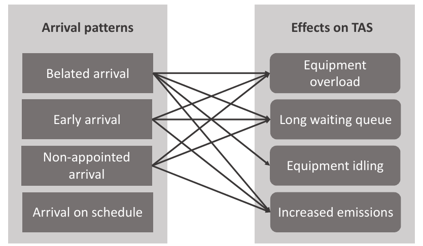
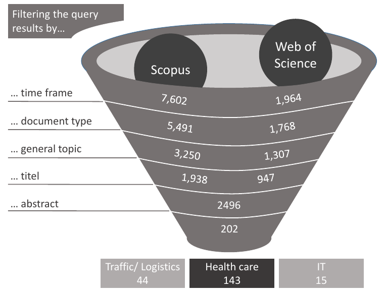

- 文献 9,566 件 → 202 件Scopus と Web of Science で時間枠予約の文献を集めて絞り込むと、医療 143 件、交通・物流 44 件、IT 15 件が残った。医療を参照先に選んだ。
- 医療の 3 つの考え方を TAS に移すオープンアクセス、重複予約（固定の時間枠と柔軟な時間枠の 2 通り）、Lian ら（2010）の予約表の断片化の解消。
- 重複予約（固定の時間枠）が 8 点で 1 位5 つの基準を 0〜3 点で採点した合計（論文 Table 1）。オープンアクセス 7 点、柔軟な時間枠での重複予約と断片化の解消が 6 点。
トラック予約システムは到着の山を崩すが、他業界の予約の知見はほとんど使われてこなかった
ターミナルのゲートはボトルネックで、混雑するとトラックの待ち時間と排出が増える。混雑の主な原因はトラックの到着の変動である。TAS では、ターミナルの運営者が搬入・搬出できる時間枠を決め、運送会社がその中から選んで予約する。論文は Chen、Govindan と Yang（2013）に従い、TAS の働きを、枠ごとの台数の上限（クォータ）の決定、時間枠の予約、コンテナとトラックの登録、ゲートでの照合、管理の 5 つに分ける。

著者らによれば、TAS は全く新しい仕組みとして扱われることが多く、他業界の知見はほとんど参照されてこなかった。例外は医療と港湾の時間枠予約の似ている点と違う点を短く比べた Huynh と Walton（2011）だけである。似ている点として、需要が不規則に変動する、処理時間が一定でない、無断キャンセル（no-show）が多い、時間を守ることが重要である、の 4 つが挙がっている。
他業界の時間枠予約のどの性質が TAS に関係し、どこまで移せるかを問う
論文の問いは 2 つである。
- 問い 1：港湾以外の時間枠予約システムのどの性質が、港湾の TAS に関係するか。体系的な文献調査で答える。
- 問い 2：その性質はどこまで TAS に移せるか。業界の外を相手にしたベンチマーク（比較分析）と、効用値分析（基準ごとの点数の合計による評価）で答える。
ベンチマークでは TAS の働きのうち「時間枠の予約」と「クォータの決定」の 2 つの工程を対象にする。前者は無断キャンセルや予約なしの到着への対応を、後者は時間枠の長さと個々の時間枠の扱いを改善できる工程として選ばれた。
文献を 202 件に絞って医療を参照先に選び、医療の 3 つの考え方を TAS の 4 つの方策に作り直す
検索式は (("Appointment" AND "System") OR ("Time Slot") AND ("Management" OR "Booking" OR "Scheduling")) で、Scopus と Web of Science を使った。9,566 件から、期間（2005〜2018 年）、文献の種類（学術誌の論文）、分野、題名、要旨の順に絞り込み、202 件が残った。

交通・物流と IT は、需要の変動、長さの違うサービス時間、無断キャンセルによる需要の急な消失といった性質が TAS と似ていないとして外した。医療の中でも、当日の患者をすばやくさばく運用レベルの計画は外し、戦術・戦略レベルの 3 つの考え方を選んだ。
- オープンアクセス：前もって予約する通常の患者と、当日に予約を入れる患者を組み合わせる（Robinson と Chen 2010、Chen と Robinson 2014）。TAS では、通常の予約と並行して当日数時間前の予約を受け、無断キャンセルや予約の変更で空いた枠を埋める。
- 重複予約：無断キャンセルに備えて枠の容量より多く予約を入れる（Chen ら 2018）。方策 (1) は固定の時間枠で、1 日または時間帯の最初の枠を重複予約し、以降の枠は無断キャンセルの確率に応じて重複させ、時間帯の終わりでは残業を避けるために重複させない。方策 (2) は柔軟な時間枠で、最初の枠だけを重複予約し、ほかの枠は 1 枠 1 台にして、時間帯の最後の枠を長くする。
- 断片化の解消：Lian ら（2010）の方法である。予約の依頼が来たら空いている候補をすべて示し、予約表全体の断片化への効果の順に並べる。TAS では、運送会社の希望日時の近くにある時間枠を、断片化を減らす効果の大きい順に並べて提示する。運送会社にその枠を選ぶ義務はない。最もよい枠から 1 つずつ示し、断られたら次を示す方法も挙げる。
5 つの基準で採点すると、固定の時間枠での重複予約が 8 点で最も高く、断片化の解消は 6 点だった
各方策を 5 つの基準で 0（悪い）〜3（とてもよい）の整数で採点し、合計を効用値とした。点数は基準ごとに見つかった文献をもとに、方策どうしを比べて決めている。
| 基準 | オープンアクセス | 重複予約 (1) | 重複予約 (2) | 断片化の解消 |
|---|---|---|---|---|
| 導入の費用 | 2 | 2 | 0 | 1 |
| ターミナルの生産性への影響 | 1 | 2 | 3 | 2 |
| 港の混雑への影響 | 1 | 1 | 1 | 1 |
| トラックの所要時間への影響 | 1 | 1 | 1 | 1 |
| 顧客満足への影響 | 2 | 1 | 1 | 1 |
| 合計 | 7 | 8 | 6 | 6 |
表1 方策の評価（論文 Table 1）。重複予約 (1) は固定の時間枠、(2) は柔軟な時間枠。
1 位の重複予約 (1) も、すべての基準で最もよいわけではない。生産性への影響は重複予約 (2) が 3 点で最も高く、顧客満足はオープンアクセスが 2 点で最も高い。港の混雑とトラックの所要時間への影響は、4 つの方策がすべて 1 点だった。
著者らは、比べたのが最も似ている医療の 1 業界だけであること、採点が主観的で別の結果もありうることを限界に挙げる。方策の効果はターミナルに合わせたシミュレーションで確かめ、繰り返し調整することを勧めている。
Lian らの断片化を減らす予約の提示を、医療の外の時間枠予約に移す案を具体的に書いた研究である
- Lian との関係：医療の 3 つの考え方の 1 つとして Lian ら（2010）を詳しく紹介する。従来の予約の方法は予約表を断片化させて非効率になること、空いている候補をすべて示して断片化への効果の順に並べること、患者が協力すると断片化が減って稼働率が上がることをまとめている。
- その後：同じ著者の博士論文 Lange（2025）は、他業界から移せる解決策の調査を含め、TAS の改善策を 2 段階のシミュレーションで評価した。
- 美容室の予約への示唆：運送会社の希望の近くにある枠を、断片化を減らす効果の順に並べて提示し、選ぶかどうかは相手に任せる、という TAS 向けの案は、美容室の予約画面で空き枠を並べる順を決める問題とそのまま対応する。一方で、断片化の効果の数え方は書かれておらず、採点も文献にもとづく主観的なものなので、指標の設計やシミュレーションでの検証は別に必要である。
@incollection{lange2019potential,
title = {Potential of non-port slot booking systems for {TAS}},
author = {Lange, Ann-Kathrin and Kr{\"u}ger, Stephan and Schwientek, Anne Kathrina and Jahn, Carlos},
booktitle = {Digital Transformation in Maritime and City Logistics: Smart Solutions for Logistics. Proceedings of the Hamburg International Conference of Logistics (HICL), Vol. 28},
editor = {Jahn, Carlos and Kersten, Wolfgang and Ringle, Christian M.},
publisher = {epubli GmbH},
address = {Berlin},
pages = {138--162},
year = {2019},
isbn = {978-3-7502-4949-3},
doi = {10.15480/882.2495}
}
ページの数値と記述は、EconStor で公開されている出版版の PDF（hdl.handle.net/10419/209391）による。書誌情報も同じ PDF の表紙の引用情報から取った。論文は CC BY-SA 4.0 で公開されており、図1・図2 は論文の図をそのまま切り出したものである。